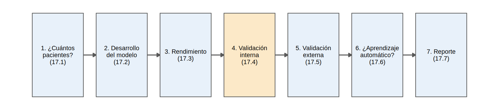

Capítulo 17: Análisis predictivos: pronóstico
“Un modelo de pronóstico no es una bola de cristal: es una promesa de que, entre mil pacientes como este, unos cuantos tendrán el evento. Hay que comprobar que la promesa se cumple.” Este capítulo enseña a construir, medir, validar y reportar un modelo que estima el riesgo de un evento futuro (aquí, la falla renal), con censura y con la muerte como riesgo competitivo, y a juzgar si el aprendizaje automático aporta algo frente a una buena regresión.
Nota🩺 El problema de todos los días
Una paciente de 66 años, con TFGe de 25 mL/min/1.73 m² y UACR de 300 mg/g, te pregunta: “doctor, ¿cuánto falta para la diálisis?”. Tu servicio tiene un registro de 3 000 pacientes con ERC avanzada seguidos hasta 5 años. ¿Cuántos pacientes necesitas para construir una calculadora de riesgo? ¿Cómo la construyes sin engañarte? ¿Cuánto vale (discrimina, calibra) y cuánto de eso es optimismo? ¿Funcionará en el hospital regional, con pacientes más mayores? Y si un colega propone un bosque aleatorio “porque es inteligencia artificial”, ¿le crees?
Todo el capítulo usa dos bases simuladas: cohorte_pronostico (desarrollo, 3 000 pacientes con ERC G3b-G5) y cohorte_validacion (1 500 pacientes de otro hospital, más mayores y con mejor TFGe). El seguimiento llega a 60 meses; cada paciente termina con estado 0 (censurado), 1 (falla renal: diálisis o trasplante) o 2 (muerte antes de la falla renal). Como la simulamos, conocemos la verdad: el riesgo real de cada paciente a 2 y 5 años, y una cohorte enorme “oráculo” sin censura. Así cada decisión se compara con la realidad, algo imposible con datos reales.
Al finalizar este capítulo podrás:
- Calcular cuántos eventos y parámetros puede sostener un modelo (criterios de Riley) y reconocer el sobreajuste.
- Desarrollar un modelo de pronóstico tipo KFRE con predictores preespecificados y convertir los HR en riesgos absolutos, tratando la muerte como riesgo competitivo.
- Evaluar un modelo con cuatro lentes: discriminación, calibración, Brier y \(R^2\), y ver que un AUC alto no garantiza porcentajes ciertos.
- Estimar el optimismo con bootstrap y validación cruzada, y evitar la fuga de información.
- Hacer una validación externa, recalibrar y resumir varios hospitales con un metaanálisis.
- Comparar LASSO, bosque aleatorio y gradient boosting con la regresión, con validación honesta, y saber cuándo el aprendizaje automático aporta.
- Reportar un modelo con TRIPOD+AI y evaluarlo con PROBAST.
ImportantePronóstico, diagnóstico y causalidad: tres preguntas distintas
- Pronóstico (este capítulo): ¿qué le ocurrirá al paciente en el futuro? Hay tiempo hasta el evento, censura y riesgos competitivos; importa acertar en pacientes nuevos.
- Diagnóstico (Cap. 16): ¿tiene la condición ahora? Se compara con un estándar de referencia en un corte transversal.
- Causalidad (Caps. 3, 11, 12): ¿qué pasaría si intervengo? Exige ajustar por confusión y emular un ensayo.
Un predictor no es una causa: que la albúmina o el fósforo mejoren la predicción no significa que corregirlos retrase la diálisis. Y un modelo de pronóstico no te dice qué tratar.
El recorrido completo en una página
Antes de entrar al detalle, juguemos la partida entera una vez, rápido. Cada paso se explica con calma en un subcapítulo.
library(survival)
library(rms)
library(ranger)
source("R/funciones_extra_c17.R")
f2 <- \(x) sprintf("%.2f", x)
f3 <- \(x) sprintf("%.3f", x)
dev <- read_csv("Bases/cohorte_pronostico.csv", show_col_types = FALSE) |> preparar_pronostico() # SIMULADA
val <- read_csv("Bases/cohorte_validacion.csv", show_col_types = FALSE) |> preparar_pronostico() # SIMULADAPaso 1. ¿Cuántos pacientes necesito? (17.1)
Lo que cuenta son los eventos y los parámetros, no los pacientes.
pacientes falla_renal muertes_previas
3000 839 482
eventos_por_parametro
105 Qué vemos: de 3000 pacientes, solo 839 llegaron a falla renal. Para el modelo de 8 parámetros hay 105 eventos por parámetro: sobra holgura.
Paso 2. Desarrollar el modelo (17.2)
Dos modelos de Cox por causa (falla renal y muerte) se combinan en un riesgo absoluto que cuenta la muerte como competidor.
mm <- ajustar_modelos_pronostico(dev) # mm$krt (falla renal) y mm$muerte (muerte sin falla renal)
paciente <- tibble(edad = 66, sexo = factor("Mujer", levels = c("Mujer", "Hombre")), tfg = 25, lu = log(300),
albumina = 4, fosforo = 3.7, bicarbonato = 23, dm = 0, ecv = 0)
c(ingenuo_5a = riesgo_cox_ingenuo(mm$krt, paciente, 60), con_muerte_5a = cif_cox(mm$krt, mm$muerte, paciente, 60),
con_muerte_2a = cif_cox(mm$krt, mm$muerte, paciente, 24)) |> round(3) ingenuo_5a con_muerte_5a con_muerte_2a
0.257 0.240 0.125 Qué vemos: a la paciente del escenario le toca un riesgo de 12 % a 2 años y 24 % a 5 años. La versión ingenua (1 − supervivencia) daría 26 % a 5 años: ignora que ella también podría morir antes.
Pasos 3 y 4. ¿Qué tan bueno es, y cuánto es optimismo? (17.3 y 17.4)
c_aparente <- c_harrell(predict(mm$krt, type = "lp"), dev$tiempo_meses, dev$krt)[["C"]]
cal_dev <- resumen_calibracion(cif_cox(mm$krt, mm$muerte, dev, 60), dev$tiempo_meses, dev$estado, 60)
dd <- datadist(dev); options(datadist = "dd")
f_cph <- cph(Surv(tiempo_meses, krt) ~ edad + sexo + tfg + lu + albumina + fosforo + bicarbonato + dm, data = dev, x = TRUE, y = TRUE)
set.seed(1)
v <- validate(f_cph, B = 100) # bootstrap de Harrell: repite todo el proceso de modelado
c_corregido <- (v["Dxy", "index.corrected"] + 1) / 2
round(c(C_aparente = c_aparente, C_corregido_bootstrap = c_corregido, O_E_5a = cal_dev$oe, pendiente_5a = cal_dev$pendiente), 3) C_aparente C_corregido_bootstrap O_E_5a
0.799 0.797 0.995
pendiente_5a
1.035 Qué vemos: el C aparente es 0.799 y, corregido por optimismo, 0.797: con tantos eventos por parámetro, casi no hay optimismo. La calibración a 5 años es buena: O/E de 1.00 y pendiente de 1.03.
Paso 5. ¿Funciona en el hospital regional? (17.5)
C O_E_5a pendiente_5a
0.794 0.897 0.880 Qué vemos: la discriminación se mantiene (C de 0.79), pero la calibración empeora un poco (O/E de 0.90: el modelo sobreestima el riesgo en pacientes más mayores y con mejor TFGe). Es el patrón típico: el ordenamiento viaja bien; el nivel de riesgo, no tanto. Se corrige con una recalibración barata.
Paso 6. ¿Un bosque aleatorio lo hace mejor? (17.6)
Comparamos, con el mismo desenlace binario (falla renal antes de 2 años) y entrenando solo en el desarrollo, una regresión logística con un bosque aleatorio, y medimos ambos en la cohorte de validación.
vars <- c("edad", "sexo", "tfg", "lu", "albumina", "fosforo", "bicarbonato", "dm", "ecv")
ent <- dev |> mutate(y = evento_a_t(dev, 24)) |> filter(!is.na(y)) |> select(y, all_of(vars))
val24 <- val |> mutate(y = evento_a_t(val, 24)) |> filter(!is.na(y))
m_log <- glm(y ~ ., family = binomial, data = ent)
m_rf <- ranger(factor(y) ~ ., data = ent, probability = TRUE, mtry = 3, min.node.size = 50, num.trees = 500, seed = 1)
auc_ml <- c(
logistica_aparente = pROC::auc(ent$y, fitted(m_log), quiet = TRUE),
bosque_aparente = pROC::auc(ent$y, predict(m_rf, ent)$predictions[, "1"], quiet = TRUE),
logistica_validacion = pROC::auc(val24$y, predict(m_log, val24, type = "response"), quiet = TRUE),
bosque_validacion = pROC::auc(val24$y, predict(m_rf, val24)$predictions[, "1"], quiet = TRUE))
round(auc_ml, 3) logistica_aparente bosque_aparente logistica_validacion
0.839 0.940 0.811
bosque_validacion
0.805 Qué vemos: el bosque “se ve” mucho mejor en los datos con que se entrenó (AUC aparente de 0.94 frente a 0.84 de la logística), pero en pacientes nuevos ambos quedan casi iguales (0.80 y 0.81). El bosque había memorizado la muestra. Cuando la relación es suave y casi lineal, una buena regresión es difícil de superar; el 17.6 muestra también cuándo sí lo logra el aprendizaje automático.
Paso 7. Reportar para que otros puedan creer (17.7)
El modelo termina siendo útil solo si está bien publicado: coeficientes, riesgo basal, cómo se validó. TRIPOD+AI dice qué contar; PROBAST dice cómo juzgar si creer. Aplicado a este modelo, el riesgo de sesgo sale bajo; aplicado a la versión ingenua (sin validación y sin la muerte), alto.
La moraleja de la partida
- El tamaño de un estudio de pronóstico lo marcan los eventos, y el sobreajuste, los parámetros (todos los que miras, no solo los que quedan).
- Un modelo se evalúa con varias lentes: un AUC alto sin buena calibración no sirve para decidir.
- El rendimiento aparente es optimista; hay que validar (internamente y en otro lugar) y reportar el valor corregido.
- Con riesgos competitivos, calcular “1 − supervivencia” sobrestima el riesgo.
- El aprendizaje automático no sustituye a la validación: sin ella, un AUC de 0.94 puede ser un espejismo.
Tip💡 Paquetes y alternativas
En este capítulo implementamos nosotros las piezas importantes (riesgo absoluto con riesgo competitivo, calibración con incidencia acumulada, tamaño de muestra de Riley) para que se vea qué hacen, y usamos survival y rms (modelos de Cox, bootstrap, calibración), riskRegression (Score(), CSC()), metafor (metaanálisis de la validación), glmnet, ranger y gbm (aprendizaje automático) y caret (validación cruzada). Los paquetes pmsampsize (tamaño de muestra oficial de Riley) y metamisc (metaanálisis del estadístico c) no están instalados en el entorno de pruebas del libro: se muestran como bloques condicionales que se ejecutan en tu máquina si los tienes.
Importante🎯 Mapa del capítulo
| Subcapítulo | Nivel | Resuelve |
|---|---|---|
| 17.1 Tamaño de muestra | 🟡 | Eventos por parámetro, sobreajuste, criterios de Riley |
| 17.2 Desarrollo tipo KFRE | 🟡 | Predictores preespecificados, Cox, riesgo absoluto, riesgo competitivo |
| 17.3 Rendimiento | 🟡 | Discriminación (C, AUC), calibración, Brier, \(R^2\) |
| 17.4 Validación interna | 🔴 | Bootstrap, optimismo, validación cruzada, fuga de información |
| 17.5 Validación externa y recalibración | 🔴 | Perfil de casos, calibración, actualización, varios hospitales |
| 17.6 Aprendizaje automático vs. regresión | 🔴 | LASSO, bosque aleatorio, gradient boosting, validación honesta |
| 17.7 Reporte: TRIPOD+AI y PROBAST | 🔴 | Lista de verificación, modelo publicable, riesgo de sesgo |
Prerrequisitos: Caps. 9 (supervivencia y riesgos competitivos), 8.3 (regresión logística) y 16 (diagnóstico: ROC y calibración). Prepara: Cap. 20.6 (tamaño de muestra de modelos de predicción) y Cap. 23 (reporte: TRIPOD+AI).
Para leer más
- Collins GS, Dhiman P, Ma J, et al. Evaluation of clinical prediction models (part 1): from development to external validation. BMJ. 2024;384:e074819; Riley RD, Archer L, Snell KIE, et al. Part 2: how to undertake an external validation study. BMJ. 2024;384:e074820; y Riley RD, Snell KIE, Archer L, et al. Part 3: calculating the sample size required for an external validation study. BMJ. 2024;384:e074821. Material del autor. Serie que acompaña los subcapítulos 17.3 a 17.5: validación interna y externa, qué medir, cómo planificar una validación.
- Efthimiou O, Seo M, Chalkou K, Debray T, Egger M, Salanti G. Developing clinical prediction models: a step-by-step guide. BMJ. 2024;386:e078276. Material del autor. Los 13 pasos del desarrollo, de la pregunta al reporte; útil para 17.1, 17.2 y 17.6.
- Binuya MAE, Engelhardt EG, Schats W, Schmidt MK, Steyerberg EW. Methodological guidance for the evaluation and updating of clinical prediction models: a systematic review. BMC Med Res Methodol. 2022;22:316. Material del autor. Para 17.5: niveles de actualización de un modelo.
- van Geloven N, Swanson SA, Ramspek CL, et al. Prediction meets causal inference: the role of treatment in clinical prediction models. Eur J Epidemiol. 2020;35:619-630. Material del autor. Qué pasa cuando los pacientes reciben un tratamiento después del momento de predicción.
- Collins GS, Moons KGM, Dhiman P, et al. TRIPOD+AI statement. BMJ. 2024;385:e078378; y Wolff RF, Moons KGM, Riley RD, et al. PROBAST. Ann Intern Med. 2019;170:51-58. Para 17.7.
- Steyerberg EW. Clinical Prediction Models (2.ª ed.) y Harrell FE Jr. Regression Modeling Strategies (2.ª ed.). Los dos libros de referencia del tema, con la misma filosofía que este capítulo: preespecificar, penalizar y validar.
- Bi Q, Goodman KE, Kaminsky J, Lessler J. What is machine learning? A primer for the epidemiologist. Am J Epidemiol. 2019;188:2222-2239. Lectura del autor (Taller 8 de aprendizaje automático). Introducción al aprendizaje automático para quien viene de la epidemiología; complementa 17.6.
- Karim ME. Epidemiological Methods (https://ehsanx.github.io/EpiMethods/) y las guías por grupo temático de la iniciativa STRATOS (https://www.stratos-initiative.org/publications/). Lectura recomendada por el autor, no se pudo consultar durante la redacción; úsalas para ampliar la evaluación de modelos de predicción y el aprendizaje automático.
Referencias
- Tangri N, Stevens LA, Griffith J, et al. A predictive model for progression of chronic kidney disease to kidney failure. JAMA. 2011;305:1553-1559.
- Steyerberg EW. Clinical Prediction Models: A Practical Approach to Development, Validation, and Updating. 2.ª ed. Springer; 2019.
- Harrell FE Jr. Regression Modeling Strategies. 2.ª ed. Springer; 2015.
- Riley RD, Snell KIE, Ensor J, et al. Minimum sample size for developing a multivariable prediction model: part II, binary and time-to-event outcomes. Stat Med. 2019;38:1276-1296.
- Riley RD, Ensor J, Snell KIE, et al. Calculating the sample size required for developing a clinical prediction model. BMJ. 2020;368:m441.
- Collins GS, Dhiman P, Ma J, et al. Evaluation of clinical prediction models (part 1): from development to external validation. BMJ. 2024;384:e074819.
- Riley RD, Archer L, Snell KIE, et al. Evaluation of clinical prediction models (part 2): how to undertake an external validation study. BMJ. 2024;384:e074820.
- Riley RD, Snell KIE, Archer L, et al. Evaluation of clinical prediction models (part 3): calculating the sample size required for an external validation study. BMJ. 2024;384:e074821.
- Efthimiou O, Seo M, Chalkou K, Debray T, Egger M, Salanti G. Developing clinical prediction models: a step-by-step guide. BMJ. 2024;386:e078276.
- Binuya MAE, Engelhardt EG, Schats W, Schmidt MK, Steyerberg EW. Methodological guidance for the evaluation and updating of clinical prediction models: a systematic review. BMC Med Res Methodol. 2022;22:316.
- Van Calster B, McLernon DJ, van Smeden M, Wynants L, Steyerberg EW. Calibration: the Achilles heel of predictive analytics. BMC Med. 2019;17:230.
- van Geloven N, Swanson SA, Ramspek CL, et al. Prediction meets causal inference: the role of treatment in clinical prediction models. Eur J Epidemiol. 2020;35:619-630.
- Harrell FE Jr, Califf RM, Pryor DB, Lee KL, Rosati RA. Evaluating the yield of medical tests. JAMA. 1982;247:2543-2546.
- Hastie T, Tibshirani R, Friedman J. The Elements of Statistical Learning. 2.ª ed. Springer; 2009.
- Tibshirani R. Regression shrinkage and selection via the lasso. J R Stat Soc B. 1996;58:267-288.
- Friedman J, Hastie T, Tibshirani R. Regularization paths for generalized linear models via coordinate descent. J Stat Softw. 2010;33:1-22.
- Breiman L. Random forests. Mach Learn. 2001;45:5-32.
- Wright MN, Ziegler A. ranger: a fast implementation of random forests for high dimensional data in C++ and R. J Stat Softw. 2017;77:1-17.
- Friedman JH. Greedy function approximation: a gradient boosting machine. Ann Stat. 2001;29:1189-1232.
- van der Ploeg T, Austin PC, Steyerberg EW. Modern modelling techniques are data hungry: a simulation study for predicting dichotomous endpoints. BMC Med Res Methodol. 2014;14:137.
- Christodoulou E, Ma J, Collins GS, Steyerberg EW, Verbakel JY, Van Calster B. A systematic review shows no performance benefit of machine learning over logistic regression for clinical prediction models. J Clin Epidemiol. 2019;110:12-22.
- Dhiman P, Ma J, Navarro CA, et al. Reporting of prognostic clinical prediction models based on machine learning methods in oncology needs to be improved. J Clin Epidemiol. 2021;138:60-72.
- Bi Q, Goodman KE, Kaminsky J, Lessler J. What is machine learning? A primer for the epidemiologist. Am J Epidemiol. 2019;188:2222-2239.
- Collins GS, Reitsma JB, Altman DG, Moons KGM. Transparent reporting of a multivariable prediction model for individual prognosis or diagnosis (TRIPOD): the TRIPOD statement. BMJ. 2015;350:g7594.
- Collins GS, Moons KGM, Dhiman P, et al. TRIPOD+AI statement: updated guidance for reporting clinical prediction models that use regression or machine learning methods. BMJ. 2024;385:e078378.
- Wolff RF, Moons KGM, Riley RD, et al. PROBAST: a tool to assess the risk of bias and applicability of prediction model studies. Ann Intern Med. 2019;170:51-58.
- Moons KGM, Wolff RF, Riley RD, et al. PROBAST: a tool to assess risk of bias and applicability of prediction model studies: explanation and elaboration. Ann Intern Med. 2019;170:W1-W33.
- Moons KGM, de Groot JAH, Bouwmeester W, et al. Critical appraisal and data extraction for systematic reviews of prediction modelling studies: the CHARMS checklist. PLoS Med. 2014;11:e1001744.